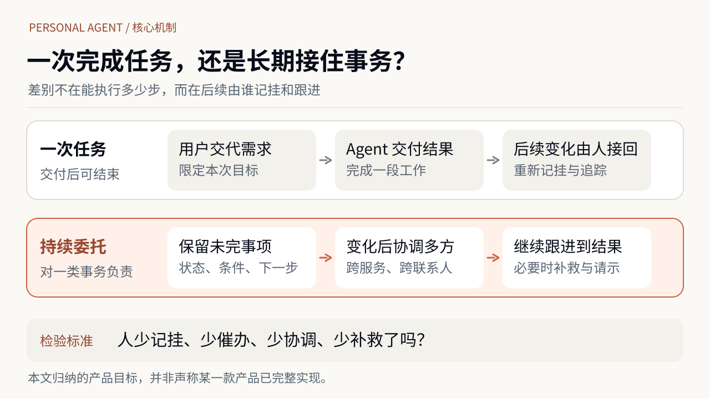
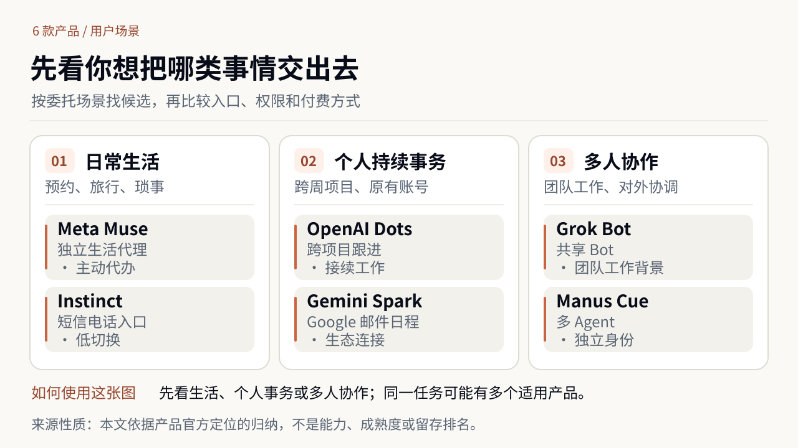

今年国庆出行前，我最先在网上找的其实是旅游团，包括常规路线和定制行程。原因很简单：对当地景点和行程安排不熟，希望有人帮我把这些事处理好。但比较下来，有的路线不符合自己的偏好，有的价格又太高，最终没有选。
后来我选择了结合 AI 自己规划。它能帮我组织整体行程；随着出行安排不断变化，也能快速重新调整，结合天气、航班等信息提出建议，再以直观、美观的可视化形式呈现。到了旅途中，临时情况打乱原计划时，我仍能让 AI 很快帮忙重排。相比以往，这次 AI 辅助 DIY 的体验好得多。
但整趟旅行还不能真正交给它。订票等环节尚未无缝衔接，遇到变化，我仍需要带着新情况回去调整方案。AI 已经是很好用的规划搭档，却还没有成为持续替我跟进预订和行程变化的经办人。
对我来说，这段经历留下的需求，不是再生成一份更漂亮的旅行计划，而是希望有人继续跟进尚未完成的安排。最近一批 Personal Agent 产品，提供了观察 AI 能否承担这类持续事务的不同尝试。2026 年 5 月，Google 在 Gemini App 中推出 Spark，尝试让 AI 在用户离开后继续办事。8 月 11 日，xAI 发布 Grok Bot，主打持续工作的 AI 同事与多 Bot 协作。9 月，Meta 发布 Muse，Manus 推出独立个人代理应用 Cue，OpenAI 又发布了 Dots；创业公司 Instinct 则凭借短信、邮件和电话里的 AI 助理，成为 The Verge 等媒体关注的消费产品。
这些产品并不完全属于同一种市场：有的主要接受个人委托，有的承接组织分配的职责。它们共同尝试的，是让用户不只交出一次规划或某一步操作，而是让服务持续接续未完事项，协调不同应用和相关方。当用户不再反复提醒时，AI 能不能连后续的记挂、协调、催办和补救一起接住？
一、值得长期委托的，不只是执行动作
旅行规划可以一遍遍重做，但下一次变化出现时，仍得有人注意到原计划不再适用，核实哪些安排已生效，再把修改落实到相应服务里。AI 已经让“重新决定怎么走”变得容易，订票和后续协调却没有因此自动完成。计划能被快速重排，与整件事有人持续负责，是两种不同的产品能力。
对于需要反复协调的事务，真正消耗精力的部分往往不在最后那个点击动作上。社会学者 Allison Daminger 在 2019 年关于家庭认知劳动的研究中，将这种看不见的劳动区分为预见需求、寻找选项、作出决定和监督进展。研究基于 35 对伴侣的访谈，说明这些负担早已存在；它并没有证明 AI 一定能把负担减下来。
同样，过去的日历提醒、邮件规则和 Apple Shortcuts早就能触发动作、串联应用。Personal Agent 不该靠“能定时执行”来宣称自己是新物种。它更值得尝试的，是在情况不完全确定、事务跨越多个服务时，持续发现未完成事项、处理变化并安排后续，不要求用户每次重新组织整件事。
这也限定了它的适用范围。有些事可以用固定规则稳定处理，没有理由换成一个更昂贵、更难监督的生成式系统。有些活动的价值恰恰在亲自参与：挑衣服、逛社区、探索目的地、与朋友讨论，本就不全是等待消除的摩擦。一个好的个人代理，应该帮用户处理他们想卸下的负担，而不是以“效率”为名接走所有过程。
任务交付以后，最难转交给 AI 的往往是后续的跟进责任。下面的对照区分两种产品目标，而不是为产品能力分级。

当用户不再反复提醒时，后续变化由谁持续照看？这是判断 Personal Agent 是否增加了真实价值的起点。
二、六款产品分别适合哪种委托？
MIT 在1995 年介绍软件代理研究时，就区分了了解特定用户兴趣、习惯并代表其行动的 user bot，与执行一般任务的 task bot。今天常见的聊天式 Assistant 和任务型 Agent 也不是 Personal Agent 的两个必经历史阶段：前者可以长期了解用户，后者的一次任务也可能跨越数天。
本文把 Personal Agent 理解为一种产品职责：代表一个人，在约定范围内持续跟进某类事务，必要时协调不同应用和相关方，并根据新的情况推进后续工作。 这是本文归纳的工作定义，不是统一行业标准。记住偏好、拥有独立邮箱，或完成一个很长的任务，都不能单独证明它已经承担了持续职责。
要理解六款产品的差异，可以先问自己：想交出去的是生活琐事、持续的个人事务，还是需要多人分工的工作？下面这张导航图按用户委托场景分组，是本文归纳，并非互斥品类。

图中每组列出两个值得优先考察的产品。接下来的表格进一步对比具体场景与付费方，方便读者理解产品选择，而非对能力排名。
| 我想交出去的事 | 优先了解 | 主要区别 | 付费方与方式 |
|---|---|---|---|
| 预约、旅行等生活杂事 | Meta Muse | 主动代办、独立代理 | 个人／小商户订阅 |
| 用短信电话处理生活事 | Instinct | 消息入口、低切换 | 免费；计划商家分成 |
| 个人项目、研究跟进 | OpenAI Dots | 跨任务接续与审批 | 个人／企业会员 |
| Google 邮件和日程 | Gemini Spark | 原有账号应用连接 | 个人 AI 套餐 |
| 团队共用 AI 工作伙伴 | Grok Bot | 共享 Bot 和工作背景 | 个人／团队／企业 |
| 多个代理分别对外办事 | Manus Cue | 独立邮箱、电话、钱包 | 早期免费；模式待定 |
“优先了解”按官方产品定位匹配场景，并非同任务实测后的性能排名。几款产品都可能处理表中的其他事情；开放地区、功能、邀请资格和授权范围仍有限制。“计划商家分成”不是已实现收入。
从生活事务看，Muse 与 Instinct 都想替用户处理预约、旅行和日常安排，但前者以独立代理提供主动服务，后者尽量融入已有的短信、电话与邮件习惯。如果已经习惯用 Gmail、日历等服务整理生活，Spark 更值得先了解：它可以利用原有账号和应用中的背景信息。Spark 的会员扩展和 Muse 面向小商户的扩展也体现了不同的获客路线。目前没有可靠的同任务对照数据，无法据此断言谁更会订旅行。
在工作场景中，Dots 与 Grok Bot 的区别不是谁能处理更多任务。Dots 的个人主代理侧重一个人跨项目持续推进，帮助文档也强调任务接续与行动控制；它面向组织的 specialist dots 仍属试点。Grok Bot 强调可分工的 AI 同事，9 月 3 日推出企业版，9 月 28 日又推出可由团队共享工作背景与职责的 Team Bots。Dots 的主代理更偏个人工作的连续性，Grok Team Bots 更强调团队可复用的工作背景；个人和团队的功能与付费方式也可能交叉。
需要几个代理分别对外联系、在限定预算内付款时，Cue 的设计值得关注：每个 Agent 有独立邮箱、电话、钱包和电脑，可以围绕一个目标分工。相比之下，Grok Bot 官方文档说明，同一用户的多个 Bot 共享一台云电脑以及其中的文件、登录状态；这使共同工作的资料更容易接续，也意味着角色名称本身不能充当权限隔离。Instinct 的另一种取舍则是减少交代事情的负担：创始人 Noah Shinn 在访谈中特别强调消息前两行是否清楚、什么时候适合打扰用户。这几种设计分别优化的是独立对外行动、团队共享协作和日常交流，而不是同一条能力排行榜。
这六种定位也对应不同的付款逻辑。个人或团队套餐要证明这项服务值得持续订阅，企业方案要证明它能交付工作能力；Instinct 则希望让消费者免费使用、由获得订单的商家承担费用。消费者在使用，不代表最终一定由消费者付费，更不意味着成交金额就是代理服务收入。这些差异帮助用户选择从哪款产品开始了解，却还没有回答更重要的一件事：如果一周后用户不再反复提醒，委托能不能继续推进？
三、用户离开后，一件事怎样继续存在？
一次任务型 Agent 可以运行很久，也可以在交付后结束；个人代理则尝试把用户交出去的一类事情长期放在自己的待办里。几天后，订位仍在候补，邮件还没收到回复，预算已经改变，或者前一次动作已经对外生效。区别不在一次任务跑了多久，而在下一次变化出现时，是否仍有人替用户接着处理。
要接住这种变化，系统需要的不只是聊天历史。以餐厅候补的假设场景为例，本文按信息在后续工作中的用途作如下区分：
| 需要分清的信息 | 回答什么问题 | 餐厅候补中的例子 |
|---|---|---|
| 目标与限制 | 用户要什么，允许怎样变？ | 日期、人数、可接受时段 |
| 已确认的事实与动作 | 当前怎样，哪些动作已生效？ | 餐厅确认候补，尚未订位成功 |
| 未完事项与等待条件 | 还缺什么，何时继续处理？ | 等空位，再核对条件并预订 |
三类信息按用途区分，不限定具体存储方式。
假设周一没有订到位置，周三出现了空位。代理需要根据当前人数、日期和可接受的变更条件继续处理；确认预订已经生效后，再更新状态并停止重复寻找。过去的偏好不能直接当成当前要求，准备执行的计划也不能当成已经生效的结果。
独立云电脑、已经连接的应用以及按事件重新启动的任务，都可能承载这样的工作。实现方式不同，用户真正需要的却一样：不再反复交代之后，代理仍知道事情推进到哪里、下一步等什么，以及什么时候该停止。
但长期委托不等于同一个模型进程、同一台云电脑必须永远在线。一个任务可以暂停，在外部事件到来时再运行；换一个执行模型，原委托也应该能够恢复。真正重要的是状态能否被接续、结果能否核实、变化会不会被漏掉。对于只需按固定条件提醒的工作，传统自动化依然可能是更可靠的选择；当外部信息含糊、需要重新规划时，生成式 AI 的灵活性才更有价值。
资料、历史判断、工具和反馈如何组织，属于我在《我为什么开始给自己搭 Harness？》中讨论的 Personal Harness——支撑 AI 在个人真实环境里持续工作的系统。本文从用户侧检验这些支持能否转化为服务：用户交出事务之后，是否真的有人持续跟进和协调。
这也带来一项不容易在演示里看见的产品要求：如果 Agent 消失、账户被撤权或用户想换服务商，未完事项、已有承诺和下一次触发条件该怎么办？长期服务越像一种托付，退出和交接就越不能留给用户自己重新回忆。
四、当一件事牵涉多方，Agent 怎样继续代表你？
上节讨论的是同一件事隔了几天还能不能接着做。但个人事务经常还横跨不同服务和其他人。让 Agent 帮忙安排旅行，可能需要联系同行人、查询酒店政策、调整日历、处理付款。航班改变后，谁发现哪些安排受到影响，谁联系各方，谁继续跟进未完成的调整？今天，这些工作往往靠用户亲自把几个应用和联系人的信息串起来。Personal Agent 更值得研究的角色，是尝试成为这段跨服务协调工作的持续经办人。
跨服务协调不是个人 Agent 独有的技术能力，企业 Agent 也会处理跨系统事务。差别在于服务对象：个人的目标分散在不同公司的服务、账号和人际关系中，没有谁天然掌握全部信息和权限。个人代理也不必自己提供机票、酒店或支付服务，那些商品、库存和履约能力仍可交给专业服务商。它要做的是围绕一个人的目标组织不同服务：例如按原预算完成旅行、让同行人知道变化、避免重复预订，并在某个环节卡住时继续寻找解决办法。如果每遇到一家新服务商，用户都要重新解释全部背景并自己追踪结果，那么代理只接管了分散的操作，没有接管协调负担。
这里还有一项用户自身无法单方面解决的限制：即使个人授权 Agent 代办，服务商也未必允许它访问网站或完成交易。The Verge 2026 年 10 月的报道记录，达美航空限制外部 Agent 代订机票，部分银行和券商出于安全考虑阻止 Agent 访问账户。这意味着跨服务协调不仅需要 Agent 会操作，还需要服务方认可的接入方式，以及能够真实完成订单和售后的合作关系。
当一件事涉及多个人，“代表谁”就更重要。Google Labs 的家庭代理 CC让家庭成员分别决定共享哪些信息；Instinct 的群聊代理也要求个人代理另行获得授权，才能进入群体协作。一个家庭或朋友群有共同安排，不代表每个人的私人邮件、日历和支付账户都自动合并。Dots 的组织专职代理、Grok 的团队 Bot 更是另一种关系：它们的部分职责由组织而非单个个人配置。技术上都可以长期工作，但委托方不同，代理需要维护的关系也不同。
这种差异一旦进入真实沟通，就会暴露风险。Business Insider 10 月 9 日记录的一位使用者自述中，个人财务月报被 Grok Bot 发到了公司高管 Slack 群；当事人称事后撤销了部分账户连接。这个个案不能说明总体事故率，却提示了一个具体问题：知道一份资料、能使用某个聊天渠道，不等于获准把资料发送给渠道中的所有人。
授权还会随事务变化。用户可能已经批准预订酒店，随后却取消行程；代理不仅要停止后续支出，还要查清已生效订单如何处理、联系谁申请退款，以及退款迟迟未到账时是否继续跟进。这里必须分清哪些动作可以自主进行、哪些需要请示。Personal Agent 的产品机会，不是让 AI 多完成几项任务，而是在约定范围内持续接手一类个人事务的跟进与协调，让用户不必总是充当自己的项目经理。
五、热潮之后，要看事情有没有真的少让人操心
年初 OpenClaw 的装机热潮已经表明，很多人愿意尝试一个能操作真实软件的个人 Agent。但尝鲜并不等于持续委托。澎湃新闻 3 月的报道记录了安装后不知用来做什么、Token 成本和安全顾虑，以及由此出现的卸载服务。它能说明某些用户的尝试遇到了阻力，却不能计算整个项目的卸载率或长期留存，更不能证明这类需求已经失败。
Instinct 则提供了另一面。The Verge 记者在10 月初的实际试用中，让它联系医生办公室、启动退货，还让它查找孩子的游泳课程。它能够理解模糊指令，却漏掉了报名所需的前置课程。任务看上去已经向前推进，真实世界的关键条件却可能还没有满足。一个普通搜索助手出错，用户通常会自己继续查；一个被长期委托的代理出错，问题可能直到报名截止、付款完成或事情没有发生时才显现。
国庆旅行中 AI 带来的规划收益已经足以让我愿意继续使用，但这份满意首先证明的是辅助规划和快速重排的价值，不能直接证明整趟行程已经有人替我持续跟进。因此，判断 Personal Agent 值不值得留下，不应该只看它每周回答了多少条消息、跑了多少任务，也不能只看用户打开 App 的频率。后台服务做得越好，用户可能反而越少想起它。 更有意义的检验，是经过一个完整的事务周期之后，原本要用户记挂的事是否被正确推进，用户投入多少时间交代、核查、催办和补救；如果停止服务，这些工作是不是又回到了用户身上。
商业模式能否成立，也要用同一尺度检验。个人会员或企业采购，终究要证明代理能长期节省精力、交付工作成果，足以让用户续费或组织持续投入预算；已有套餐捆绑的能力，还要分清是带来新收入，还是只提高原有会员的使用价值。Instinct 创始人提出另一条路线：消费者免费，由获得订单的商家支付分成。旅行事务可能带来较大的交易额，但平台交易额不等于代理收入，更无法证明那些没有新购买的长期事务已有人为之付费。
这里有两道现实约束。第一，用户希望它处理的并不都是交易：跟进邮件、等待回复、撤销订阅和退款，未必产生新的购买佣金。第二，商家希望更多成交，用户最好的决定有时却恰好是“不买”。Business Insider 10 月的采访记录了用户收到未经请求的商品推荐；报道没有证据证明这些是付费广告或 Instinct 从中获利，但它已经把“主动帮忙”和“主动创造消费机会”的界线变成了真实产品问题。
现在几家大厂和创业公司都已把“替人长期处理事务”做成了可辨认的产品方向。还不能确定它会成为每个人独立付费的新入口，还是逐渐融入既有应用与企业服务。对用户而言，留下这项服务的理由不在于它某一次回答得多好，而在于一段时间后，自己有没有少做那些记挂、联络、协调和补救的工作。如果这些未完事项仍需要人一件件盯着，Personal Agent 就还没有比一个能执行任务的工具走远多少。
参考资料
一手文件／官方发布
- xAI：Introducing Grok Bot（2026-08-11）
- xAI：Grok Bot for Enterprise（2026-09-03）
- xAI：Team Bots（2026-09-28）
- xAI：Grok Bot 的云电脑与应用权限
- MIT News：Software agents can smooth users' interactions with computers（1995）
- OpenAI：dot 正式登场
- OpenAI：Getting started with your dot
- Meta：Introducing Muse
- Meta：Muse for Small Business
- Google：The Gemini app becomes more agentic
- Google：Google AI plan updates
- Google Labs：CC for families
- Manus：Introducing Manus 2.0 and Cue
- Instinct 创始人访谈：Invest Like the Best
- Apple WWDC 2019：Shortcuts
学术研究
独立媒体与真实使用反馈
- Business Insider：Grok Bot 个人财务资料误发工作群（2026-10-09）
- The Verge：Websites are closing their doors to AI agents（2026-10-17）
- The Verge：Instinct hands-on（2026-10-09）
- Business Insider：Instinct unsolicited shopping recommendations（2026-10-05）
- Business Insider：Instinct group chat agents（2026-10）
- 澎湃新闻：OpenClaw 装机热潮后的卸载与培训（2026-03-12）
相关阅读（作者已发布文章）